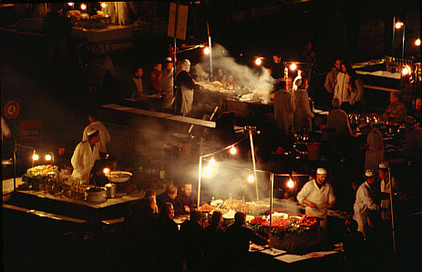
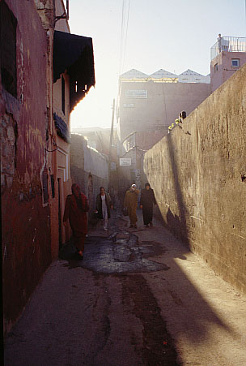
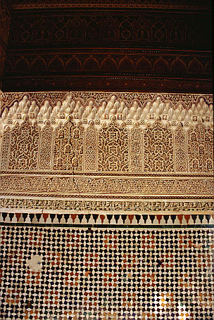
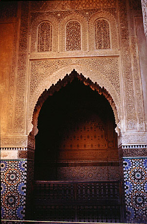
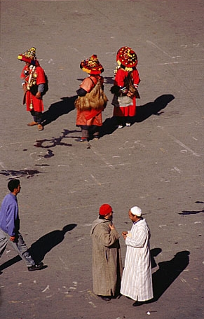

Cemaa el-Fna meydani: acik hava lokantalari /
Djemaa el-Fna square: open-air foodstalls

"Medina" 'da (eski sehir) bir sokak / "Medina" (old town) street

Ahsap oyma - duvar sivasi oymasi - "zelij" seramik susleme (yukaridan
asagiya) /
Wood carving - stucco carving - "zellij" tilework (from top to bottom)

Saadi Mezarliginda bir mozele / Mausoleum at Saadian Tombs

Cemaa el-Fna meydaninda geleneksel giysileriyle su saticilari /
Traditionally-dressed watersellers on Djemaa el-Fna square